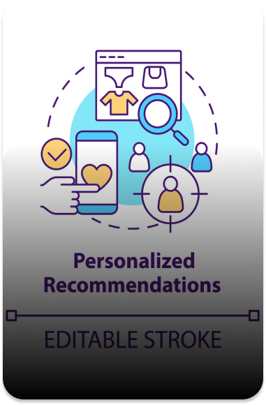

Text-Based AI Generated Content (AIGC) is increasingly becoming a pivotal instrument in the realm of healthcare, significantly enhancing numerous facets of patient care, medical data processing, and clinical decision making. Utilizing natural language processing (NLP) and sophisticated AI algorithms, text-based AIGC in healthcare enables the extraction, interpretation, and integration of vast amounts of unstructured medical data, enriching disease classification, predictive modeling, and patient-centered communication. By training on extensive datasets such as Electronic Medical Records (EMRs) and clinical narratives, these AI systems comprehend complex medical terminologies, patient histories, and diverse disease patterns, thus empowering them to generate insightful content, aid diagnostics, and support therapeutic decisions. The process encompasses stages like data preprocessing, model training, and information extraction, leading to the generation of AI-mediated content that elevates the efficiency, accuracy, and personalization of healthcare delivery.
Major Uses In Industry

Evidence-Based Medicine (EBM)
LLMs can help aggregate, summarize, and analyze vast amounts of clinical evidence from various studies, assisting in the formation of evidence-based medicine guidelines and policies.

Medical Information Extraction
LLMs can extract PICO (patient, intervention, comparison, and outcome) elements using few-shot learning, a technique that enables text classification and summarization from limited labeled examples for electronic health records (EHR).

Automated Patient Communication
Text-based AI can automate patient communication for routine tasks like appointment reminders, health tips, or follow-up instructions, improving patient engagement and adherence to treatment plans.
Features and Methods of AIGC application
Algorithms in EHR:
The ability of algorithms to learn from past data and predict future outcomes, specifically in the domain of electronic health records (EHR). This process involves an algorithm that creates a set of rules connecting observations to diagnoses. After being trained on historical patient data, the AI system can evaluate new patient data, using its learned experience to predict the likelihood of a certain condition or disease. This predictive capability helps healthcare organizations gain the insights necessary for efficient and effective patient treatment.
Natural Language Processing (NLP):
Natural Language Processing (NLP) offers two primary approaches: rule-based, where preset program rules are followed, and machine learning (ML) approaches, where rules are learned through supervised or unsupervised methods; as over 80% of healthcare data is unstructured, NLP presents a potential solution to the underutilization of such data in electronic health records (EHRs), with current NLP capabilities being utilized to extract information from clinical narratives, streamlining clinical trials or studies through AI-assisted cohort selection or matching from EHRs.
Few-shot learning:
A technique that trains models to understand and perform tasks using a limited number of labeled examples. In the healthcare system, it is used to enhance the capabilities of large language models (LLMs) in tasks such as extracting patient, intervention, comparison, and outcome (PICO) elements from clinical research data. This technique streamlines the extraction process, reduces annotation costs, and speeds up evidence synthesis, a process that is integral to making informed healthcare decisions.
Named Entity Recognition (NER) based on Deep Learning:
This approach utilizes deep learning methods to perform entity(e.g., diseases, drugs) extraction in the text tasks. In evidence synthesis, attention mechanisms are employed to accurately identify and classify biomedical entities in literature, addressing label inconsistency issues and enabling structured data extraction from unstructured text.
Many studies utilize multiple algorithms to address depression diagnosis using text datasets, with Neural Networks (NN), Support Vector Machines (SVM), and Natural Language Processing (NLP) being the most frequently employed methods.
Advantages and Disadvantages
Advantages
- LLMs handle scientific literature data, inform healthcare decisions by integrating findings from multiple studies.
- They can extract PICO (patient, intervention, comparison, and outcome) elements from documents using few-shot learning, reducing annotation costs and speeding up the extraction process.
- Text generation models produce human-like text, aiding in summaries, document drafting, and patient-friendly medical information.
Disadvantages
ChatGPT and similar LLMs can miss key details, contain errors, and struggle to distinguish current evidence.
LLMs lack the ability to continuously learn and update knowledge, a crucial requirement in medicine.
LLMs' answers to medical questions may become outdated, contradictory, or inaccurate with time.
Lay summaries from LLMs can be inaccurate and incomplete, leading to confusing recommendations.
Case study and Impact
Assist with decision support:
Enable solutions that provide humans with assistive information relating to patients’ medical information for faster and more reliable decisions. Moreover, assisting and automating the processing of medical documents by proper medical coding to ensure accurate care and billing.
Annotate and curate medical information:
Support solutions for clinical data annotation and curation such as automating clinical coding and digitizing manually created data. It minimizes healthcare provider effort by automating the aggregation of key patient data for trend and pattern monitoring.
Microsoft Azure API’s review and report medical information:
Aid in identifying and reporting errors in medical information, ensuring quality assurance processes are effective. It also promotes HL7 standards for enhanced exchange and integration of electronic health information across healthcare services.
Develop predictive models using historic data:
Power solutions for planning, decision support, risk analysis and more, based on prediction models created from historic data.
Extract insights and statistics:
Identify medical entities such as symptoms, medications, diagnosis from clinical and research documents in order to extract insights and statistics for different patient cohorts.
DocsGPT:
It alleviates the administrative burden on healthcare professionals by automating tasks like drafting and faxing of medical letters to insurers. This can result in more time for patient care and potentially alleviate the health workforce shortage. Also with its impressive accuracy in providing information, it could serve as a reliable tool for answering patient questions, aiding patient-provider communication, and reducing misconceptions.
Market Growth and Future Opportunities
CURRENTLY
Worth $2.36 Billion with a growing CAGR of 19.1% during the forecast period of 2023-2030
By 2030
Projected to reach US$9.54 billion (NLP in Healthcare)
Market Drivers:
- Generation of Large and Complex Healthcare Datasets
- Pressing Need to Reduce Healthcare Costs
- Improving Computing Power and Declining Hardware Cost
- Rising Number of Partnerships and Collaborations Among Different Domains in Healthcare Sector
- Growing Need for Improvised Healthcare Services due to Imbalance Between Healthcare Workforce and Patients
Market Restraints
- Reluctance Among Medical Practitioners to Adopt AI-based Technologies
- Lack of Skilled AI Workforce and Ambiguous Regulatory Guidelines for Medical Software
Future Task to be Included
Greater Integration with EMR Data
Connecting standalone AI applications that are used for diagnostics and disease prediction with personal medical data, medical history, and large statistical libraries stored in EMRs. Such integration can provide more personalized and powerful disease predictions and classifications.
Improving NLP Applications:
Natural Language Processing (NLP) has a crucial role to play in healthcare, particularly in EMR and clinical narratives. Future tasks include improving information extraction, conversion of unstructured data into structured data, and better categorization of data and documents.
AI Adoption in Daily Clinical Practice:
One of the biggest challenges for AI in healthcare is its adoption in daily clinical practice. Future tasks will involve addressing these challenges, which include regulatory approval, integration with EHR systems, standardization, clinician training, payment structures, and system updates.
Opportunities in Healthcare
Improving accessibility:
Text-based AIGC can replace technical jargon with plain language, making medical information more understandable and empowering patients in their health decision-making.
Enhancing research capabilities:
LLMs can aid in aggregating clinical research criteria, facilitating systematic reviews and meta-analyses for improved evidence-based medicine.
Providing real-time evidence synthesis:
LLMs can offer conversational answers to complex medical questions, assisting clinicians in staying updated with the latest knowledge and providing timely information.
Complementing human-written summaries:
AI-generated summaries can work alongside human-written summaries to ensure accurate and comprehensive information for patients.
Enabling reliable reasoning:
Integrating text-based AIGC with curated clinical knowledge bases can support reliable and informed decision-making by healthcare professionals.
Challenges in Healthcare
Continuous learning and knowledge updates:
LLMs currently lack the ability to learn and update their knowledge base in real-time, posing a challenge in keeping up with the rapidly evolving medical evidence.
Differentiating current and obsolete evidence:
LLMs need to develop temporal reasoning skills to distinguish between current and outdated evidence, as medical guidelines and knowledge can change over time.
Inaccuracies and errors:
LLMs may miss important details, contain factual errors, incorrect data, or misrepresentations, leading to potentially unreliable information and answers.
Reasoning limitations:
Improvements are required in LLMs' reasoning abilities to enable complex, robust, and explainable thinking, ensuring more reliable and accurate outputs.
Reviewing lay summaries:
Lay summaries generated by LLMs may lack adequate accuracy and completeness, highlighting the need for expert review to ensure reliability and clarity for patients and the public.
Text-based AIGC in healthcare signifies an exciting frontier, promising to transform patient care, medical data utilization, and clinical decision-making processes. However, the path towards this revolutionary shift is lined with challenges. Crafting advanced AI models adept at interpreting complex medical data and generating contextually relevant, medically accurate text demands considerable computational resources and proficiency in natural language processing (NLP). Ensuring the confidentiality and ethical use of sensitive patient data is another substantial hurdle, as AI systems must respect privacy laws and ensure data security. The risk of bias and misinformation also warrants careful consideration, thus underscoring the need for meticulous validation processes and ethical guidelines. Collaboration among stakeholders, including healthcare professionals, AI researchers, policymakers, and patients, is indispensable for creating industry standards, ethical principles, and regulatory frameworks that support responsible and ethical deployment of text-based AIGC in healthcare. By collectively navigating these challenges, the healthcare sector can fully harness the transformative potential of text-based AIGC, while maintaining patient trust, equity, and preserving core medical ethics.
Text-Based AIGC has a wide range of application in the education industry, ranging from Intelligent Tutor
systems that supports both small classroom settings to Massive Open Online Courses to AI guided programming
that teaches students programming concepts. This section will explore the various applications of Text-Based
AIGC in the education industry.
Major Uses In Industry

Intelligent Tutoring System
Intelligent Tutoring Systems(ITS) is an educational system that gives students customized feedback based on their progress and ability, without the supervision of teachers.

Data Analytics
Data sets being collected from massive scale online learning systems, ranging from MOOCs to Khan Academy, as well as smaller scale online programs, have fueled the rapid growth of the field of learning analytics.
AI-Guided Programming
AI Codex generated code are often used to assits professionals to complete coding tasks, but its generative nature might also be used in educating novice programmers
Intelligent Tutoring Systems
Intelligent Tutoring Systems(ITS) is an educational system that gives students customized feedback based on their progress and ability, without the supervision of teachers. The main benefit of ITS is that it is scalable and can be used in courses such as Massive Open Online Courses (MOOCs). For instance, online platforms such as Coursera and EdX all offers MOOCs that uses some form of ITS such that students are able to to get quick feedback on the process. Here are some examples where Text based AI is used ITS.
ITS Authoring
Authoring ITS requires large amount of technical knowledge and time. Researches have shown that authoring time usually takes 200-300 hours of instruction time per hour of instruction, while example tracing using Cognitive Tutor Authoring Tools(CTAT) reduces the authoring time to 50-100 hours per hour of instruction. Hence, there have been on going research on using AI to streamline this process. AI’s would be able to learn through programming by demonstration and infer correct steps based on human authoring inputs. Results have shown that such authoring techniques allows easier interaction with faster authoring time. Other examples of Non-Programming ITS authoring includes integrating CTAT to authoring MOOCs , which leads to a higher accuracy rate.
Examples of ITS Authoring Software
Carnegie Learning :
Carnegie Learning, Inc. is a provider of K-12 education services for math, literacy and ELA, world languages, and applied sciences.
Alta:
Alta is Knewton’s fully integrated, adaptive learning courseware. A complete course solution, alta is designed to optimize the way students study and learn while completing assignments. All of Alta's content — including instructional text and video, examples and assessments — is organized by learning objective and served up at the precise moment a student needs it.
Data Analytics
With the rise of MOOCs, researchers have been interested in gathering data and analysing it to better understand to efficacy of such online courses. During COVID era a lot of courses were moved online, and students and instructors both experienced the positives and pain of online education. Hence there exists a need for researchers to fully understand the dynamics and challenges of large scale online education. Conferences such as Learning @ Scale aims to explore how AI are able to improve the quality of education at scale. Some of the paper submissions in this community uses applies deep learning, natural language processing, and other AI techniques to analysis of student engagement, behavior, and outcomes.
AI Guided Programming
With the rise of Large Language Models (LLM) such as GPT-4, more and more people have been using such technologies in coding. For students, this means a huge resource for them to utilize it in learning coding, automating coding processes etc. Some educators voices concern that overreliance of AI generated code might negatively impact learning and retention. Researchers in University of Toronto have tried to understand the effect of AI Code Generators on Supporting Novice Learners in Introductory Programming. They compared students performance of those that has access to AI Codex to those who did not have access, and results have shown that those who have access to the Codex have significantly better code-authoring performance while not decreasing performance in manual code-editing. The study also showed that those who had access to Codex had a higher retention rate of the knowledge they acquired.
However, other researchers have proposed that AI generated code might do more harm than good for novice learners. For instance, since most code are trained using public code online by professional coders, the syntax and convention they used might not be appropriate for novice programmers. Furthermore, the quality of code generated by AI might not be accurate all of the time, and the user would need to apply discernment when using code generated by AI. For novice programmers, they might now have the required knowledge to discern proper code from problematic ones, which might ended up hurt their understanding of basic programming concepts.
Text-Based AI Generated Content (AIGC) has emerged as a powerful tool in the entertainment industry,
revolutionizing various aspects of content creation, personalization, and engagement.
Leveraging natural language processing (NLP) techniques and advanced AI algorithms,
text-based AIGC technology enables the generation, manipulation, and adaptation of textual content,
contributing to innovative storytelling, personalized recommendations, and interactive experiences.
By training on vast datasets of text, these algorithms learn linguistic patterns, semantic structures, and context,
enabling them to generate human-like text, engage in dialogue, and provide intelligent responses.
The process involves stages such as data preprocessing, training, and generation,
resulting in the creation of AI-generated text for various entertainment applications.
Major Uses In Industry
Storytelling & Scriptwriting
This helps writers generate story outlines, character dialogues,
and plot twists for compelling narratives, as well as providing creative suggestions, generating
alternative storylines, and adapting content based on audience preferences.
Personalized Recommendations
Such algorithms analyze user preferences, browsing history,
and contextual data to deliver personalized recommendations for movies, TV shows, books, and music.
Chatbots & Virtual Assistants
This enables the development of chatbots and virtual assistants that can interact with users, answer questions, provide information, and engage in natural language conversations.
Features and Methods of AIGC application
Generative Language Models:
Generative language models, such as Recurrent Neural Networks (RNNs) and Transformer models, form the foundation of text-based AIGC. These models learn the statistical properties of language and generate coherent and contextually relevant text based on the input and training data.
Content Manipulation and Generation:
Text-based AIGC enables content creators to manipulate and generate textual content. It can modify attributes such as sentiment, writing style, or complexity, providing the ability to adapt content for different purposes or tailor it to specific audiences. Additionally, AIGC algorithms can generate new text based on prompts or desired themes, assisting with content creation and ideation.
Natural Language Understanding and Dialogue Systems:
Text-based AIGC contributes to the development of natural language understanding systems and dialogue agents. These systems can interpret user queries, engage in meaningful conversations, and provide intelligent responses based on contextual understanding and knowledge retrieval.
Automated Translation and Localization:
Text-based AIGC supports automated translation and localization of textual content. It can automatically translate text between different languages, facilitating the adaptation of content for global audiences. Furthermore, AIGC algorithms can consider cultural nuances, idiomatic expressions, and linguistic variations to ensure accurate and localized translations.
Text Summarization and Extraction:
AIGC algorithms can summarize and extract key information from large volumes of text, condensing it into concise and meaningful summaries. This aids in content analysis, information retrieval, and efficient content consumption.
Level of Required Human Input
The level of human input required in text-based AIGC varies depending on the application, use case, and platform. While some applications may rely heavily on human creative input and oversight, others may involve minimal human involvement, such as text generation for basic content recommendations.
Below is an overview on different levels of human inputs required for various types of applications, uses, and platforms:
Creative Direction/Storytelling:
Human input is essential in providing creative direction, establishing storytelling elements, and defining the narrative structure. Content creators and industry experts contribute their artistic vision and expertise to guide the AI algorithms in generating creative narratives.

Training Data Curation:
Human involvement is required in curating and preparing training datasets, including selecting and preprocessing text data to ensure relevance, accuracy, and quality. Human experts annotate and label the data, providing the necessary context and semantic information for training the AI models effectively.
Character Development and Dialogue:
Human inputs play a significant role in shaping character personalities, traits, and dialogue in entertainment applications. Writers and creative professionals provide input to ensure that AI-generated dialogue aligns with the characteristics and intentions of the fictional or virtual characters.
Language & Cultural Context:
Human expertise is required to provide language and cultural context to the AI algorithms. This involves ensuring that AI-generated text adheres to the linguistic nuances, cultural references, and appropriate language usage relevant to the target audience or specific entertainment genre.
Quality Assurance:
Human involvement is necessary for curating and selecting the appropriate content. Human experts review and evaluate the generated text, ensuring its quality, coherence, and relevance to the entertainment industry, having the final say to determine the suitability and artistic merit of the AIGC.

User Interaction and Feedback Analysis:
Human involvement is crucial in analyzing user interactions and feedback in applications such as chatbots or virtual assistants. Human experts interpret user responses, identify patterns, and refine the AI models to improve user engagement, responsiveness, and overall user experience.

FUTURE OPPORTUNITIES
Looking ahead, future opportunities in AIGC include enhanced natural language understanding where AI systems could generate more nuanced and human-like text. Another area is real-time dialogue systems, which could revolutionize live entertainment like sports broadcasting and online gaming.
Enhanced Natural Language Understanding:
Advancements in NLP techniques and AI algorithms, including better contextual comprehension, semantic understanding, and the ability to generate more nuanced and human-like text.

Multi-modal Integration:
Integration of text-based AIGC with other modalities such as images, audio, and video will enable more immersive and interactive entertainment experiences. This integration will enhance content personalization and storytelling capabilities.
Real-time Dialogue Systems:
Future tasks will involve developing real-time dialogue systems that can engage in dynamic and meaningful conversations with users, including more advanced chatbots, voice assistants, and interactive virtual characters capable of generating contextually relevant responses.

Opportunities in Marketplace
Enhanced Personalization:
Text-based AIGC offers an opportunity to deliver highly personalized content recommendations and experiences. By leveraging AI algorithms to analyze user preferences, browsing history, and contextual data, startups can develop platforms that provide tailored content suggestions. This level of personalization enhances user engagement, increases customer satisfaction, and fosters long-term user loyalty.
Interactive Storytelling Experiences:
AIGC can revolutionize storytelling in the entertainment industry by enabling interactive experiences where users actively participate in shaping the narrative. Startups can leverage text-based AIGC to develop applications and games that allow users to make decisions, interact with characters, and influence the storyline through text-based interactions. This immersive and dynamic storytelling approach offers unique and engaging experiences, fostering user engagement and replay value.
Efficient Content Localization and Translation:
Text-based AIGC presents an opportunity for startups to streamline the process of content localization and translation. By leveraging AI algorithms, businesses can automate the adaptation of content to different languages, ensuring efficient and accurate translations. This capability enables startups to expand their reach into international markets, cater to diverse audiences, and tap into global revenue streams more effectively.
Content Generation and Automation:
AIGC technology can significantly enhance content generation and automation processes in the entertainment industry. Startups can leverage AI algorithms to automate tasks such as writing summaries, generating descriptions, or producing marketing materials. This automation saves time and resources, allowing content creators to focus on more creative and strategic aspects of their work. It enables startups to produce content more efficiently, scale their operations, and deliver a larger volume of high-quality content to meet growing demand.
Challenges in Entertainment Marketplace
Maintaining Artistic Authenticity:
AIGC-generated text may lack the creativity, originality, and unique artistic expression that human-generated content offers. Startups and businesses investing in text-based AIGC face the challenge of finding a balance between utilizing AI-generated text and preserving the authenticity and creative voice of human creators. It requires thoughtful integration of AI technologies while ensuring that the artistic vision and intent remain intact.
Ethical Concerns and Bias:
AIGC raises ethical concerns related to misinformation, bias, and the responsible use of AI-generated content. Startups must address these concerns by implementing ethical guidelines, ensuring transparency in the use of AI algorithms, and actively mitigating biases in the training data. It is essential to establish trust with users and stakeholders by demonstrating a commitment to ethical practices, promoting fairness, and providing accurate and reliable content.
Language and Cultural Sensitivity:
Text-based AIGC algorithms may struggle with understanding linguistic nuances, cultural references, and context-specific elements. Startups must invest in developing AI models that are sensitive to these factors to provide culturally appropriate and contextually relevant text in different entertainment applications. It requires ongoing research, data curation, and refinement of algorithms to ensure that the AI-generated text resonates with diverse audiences and aligns with cultural norms.
User Acceptance and Engagement:
Convincing users to engage with AI-generated text and ensuring a seamless integration of AI systems in entertainment experiences can be a challenge. Startups need to focus on creating user-friendly interfaces that effectively communicate the benefits and value of AI-generated content. Additionally, delivering high-quality AI-generated text that aligns with user expectations is crucial for user acceptance and engagement. Continuously refining the technology, addressing user feedback, and improving the natural language processing capabilities of AIGC algorithms are key to driving user adoption and satisfaction.
Text-based AIGC holds immense potential for revolutionizing content creation, personalization, and engagement in the entertainment industry. However, startups and businesses must be cognizant of the challenges at hand. Developing advanced AI models capable of generating high-quality, contextually relevant text requires substantial computational resources and expertise in natural language processing (NLP). Ensuring the preservation of artistic integrity and authenticity poses another hurdle, as AI systems may struggle to replicate the nuanced creativity of human-generated content. Ethical considerations also loom large, necessitating measures to address biases, misinformation, and data privacy concerns. Collaboration among stakeholders, including researchers, industry experts, policymakers, and user communities, is vital in establishing ethical guidelines, industry standards, and regulatory frameworks that promote responsible and ethical implementation of text-based AIGC. By navigating these challenges collectively, the entertainment industry can fully unlock the transformative power of text-based AIGC while upholding user trust, inclusivity, and societal values.